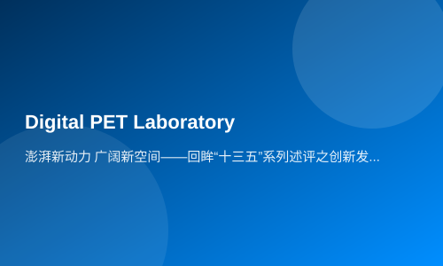

Surging New Momentum, Broad New Horizons: Looking Back at Innovation During the 13th Five-Year Plan
BEIJING, Oct. 19 (Xinhua) -- This is a period of five years during which innovation-driven development has continued to deepen and expand, and technology has continuously 'empowered' high-quality economic growth.
High-speed rail and 5G are accelerating their applications, smart devices are flooding into households, and more innovative drugs are being produced in China... Looking back at the past five years (the 13th Five-Year Plan period), China's innovation quality has consistently ranked first among middle-income economies, with major scientific and technological indicators steadily improving. This new impetus is driving the 'China' giant ship towards its rejuvenation.
The development engine continues to shift towards innovation
In September, at Huanghua International Airport in Changsha, Hunan Province, an unmanned logistics vehicle from UISEE Technology autonomously received a task from the cloud, planned its route independently, and avoided obstacles to accurately deliver goods to the designated area.
UISEE's founder Wu Gansha said this is the first application of autonomous driving technology in China's aviation logistics sector, which will enhance operational efficiency in air cargo transportation.
'Unmanned' technologies are emerging one after another, 'scan-to-pay' services are ubiquitous, and hard tech is gaining favor with capital markets. Innovation has become increasingly the primary driver of development, injecting inexhaustible momentum into economic transformation and upgrading.
In Shandong Province, QiXin Optoelectronics, which is tackling core technologies for next-generation high-speed optoelectronic devices, is building an incubation base for high-end talent in innovation and entrepreneurship, becoming a key project for the province's new-old kinetic energy conversion.
In Hubei Province, Professor Xie Qingguo from Huazhong University of Science and Technology has developed a 'high-definition digital camera' for cancer cells -- the all-digital PET/CT. Its performance is at international advanced levels, with potential to drive industrial chain development in high-end medical equipment.
A new era calls for new development, which nurtures new momentum.
The total GDP of 169 national-level high-tech zones reached 12 trillion yuan; tens of thousands of science and technology personnel have started or founded 11,500 enterprises. As of June 2020, the number of valid domestic (excluding Hong Kong, Macao, and Taiwan) invention patents in China was 1.996 million, ranking first globally for consecutive years... These eye-catching figures outline a grand picture of scientific and technological innovation.
In recent five years, major innovative achievements have emerged one after another in China -- from the maiden flight of large aircraft to competition at the top ranks of supercomputers, and nuclear power technology and equipment going global. A series of key core technologies have beenovercomein strategic fields, with some high-tech industries entering world-leading positions.
Underinnovation-driven development, China's development during the 13th Five-Year Plan period has accelerated, heading towards a 'new future'.
The wave of innovation brings more 'sense of gain' to people.
On October 9, the National Medical Products Administration approved Xinva Biologics' new anti-tumor drug -- Daburu Hua. As a result of the Major New Drug Creation Program, the launch of Daburu Hua has reduced patients' medication costs and better met public demand for high-quality biological drugs.
Xinva Biologics, founded in 2011, saw four drugs go to market within nine years, becoming a microcosm of China's speed in new drug development.
Better medical services, safer food and medicines, more livable environments... The needs and calls from the people are the voice of our times for scientific and technological innovation.
Since late August this year, Northeast China has been hit by three consecutive typhoons. In October, 24,500 mu (1633 hectares) of soybeans and corn in Heihe City's Aihui District still achieved a bountiful harvest. 'The secret to the bumper crop is using science and technology and advanced machinery, as well as rational crop rotation and selecting high-quality soybean varieties,' said Gai Yongfeng, head of the Jiaxin Modern Agricultural Machinery Cooperative.
A domestically produced cardiovascular OCT (optical coherence tomography) device that helps doctors interpret images of plaques and blood clots has recently been launched. Zhu Rui, founder of Microbright Medical, stated that realizing domestic production of OCT devices will greatly boost precise treatment for cardiovascular disease patients and reduce their burden.
Online shopping allows people to shop without leaving home; online classes bridge the 'education gap'; high-speed rail makes 'the distance between heaven and earth seem close'... These innovative cases benefiting the public have woven a blueprint for comprehensive well-being, firmly supporting Chinese people's aspirations for a better life.
New milestones, new journeys
Yuehai Street in Shenzhen covers only 23 hectares but houses 95 listed companies, with tech giants like ZTE, Tencent, and DJI active there.
Forty years ago, the cannon fire at Shekou echoed loudly; in a blink of an eye, the landscape has changed. Shenzhen's economic volume is now ranked fifth among Asian cities.
On October 18, the 'Comprehensive Reform Pilot Scheme for Building a Demonstration Zone of Socialism with Chinese Characteristics in Shenzhen' was officially released. The list includes 40 authorized items covering six aspects: market-oriented allocation of factors, business environment, scientific and technological innovation system, opening up, public service system, ecological and urban space governance.
Innovation is the 'golden key' to creating miracles in Shenzhen; it also serves as a strategy for breaking through bottlenecks and forging new paths under new circumstances. Advancing reform on higher grounds, at higher levels, and with higher goals -- Shenzhen's rebirth mirrors China's new journey.
Accelerate the construction of major innovation platforms, build first-class innovation environments, aggregate top-notch innovative resources, and attract world-class innovative talents;
Mass entrepreneurship and innovation have promoted reforms such as 'streamlining administration for better regulation' (Fangguanfu), becoming a crucial lever to enhance innovation efficiency and capability, nurturing continuous new momentum.
Reform in the science and technology sector has ventured into deep waters; measures to break through barriers hindering innovation have been taken seriously. A series of significant documents such as 'Action Plan for Promoting Transfer and Transformation of Scientific and Technological Achievements' and 'Plan for Deepening Reform of Science and Technology Awards System' have been issued, making mechanisms conducive to innovation more mature and well-defined.
In the vast universe, the journey of Tianwen heading towards Mars is getting longer, while Yutu's steps on the moon are extending further. On fields of hope, Yuan Longping's team has achieved an average yield of 802.9 kg per mu (536 kg/ha) with their 'Super Thousand' salt-tolerant rice variety, setting a new record for high-yield rice in saline-alkali land.
2020 marks the year when China achieves its phased goal of becoming an innovative country. Standing at this new historical starting point and facing the unprecedented changes of our times as well as development needs during the 14th Five-Year Plan period and beyond, it is even more necessary to strengthen innovation as the primary driving force. The wave of Chinese innovation will resonate with the era and continue surging forward!
Editor: Tan Huiting